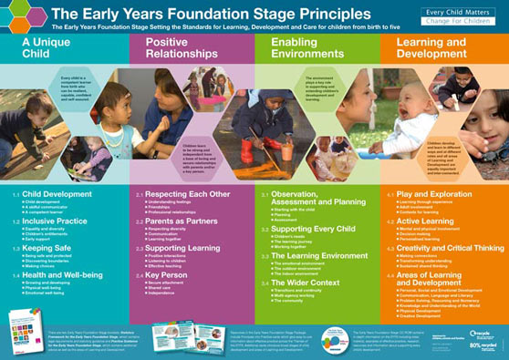
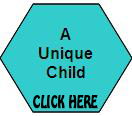
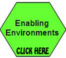

 From 1 September 2008 all the schools and early year’s providers in OFSTED registered settings are required to deliver the new Early Years Foundation Stage (EYFS). The EYFS framework sets the standards for the learning, development and care of children from birth to the end of the Early Years Foundation Stage - the 31 August after their 5th birthday.
The main aim of the EYFS is to help each child achieve the five Every Child Matters Outcomes: • To be healthy • To be safe • To enjoy and achieve • To make a positive contribution • To achieve economic wellbeing
The EYFS is based on four themes: |
|---|
|  | - every child is a competent learner from birth who can be resilient, capable, confident and self-assured. |
+ |
|
| - children learn to be strong and A unique child independent from a base of loving and secure relationships with parents and/or key person. | |
+ |
|
|  | - the environment plays a key role in supporting and extending children's development and learning. |
= |
|
| - children develop and learn in different ways and at different rates and all areas of learning and development are equally important and inter-connected. | |
 |
 |
|---|